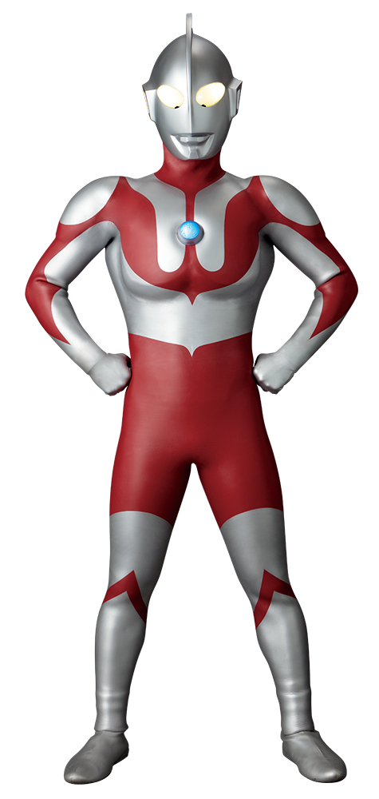
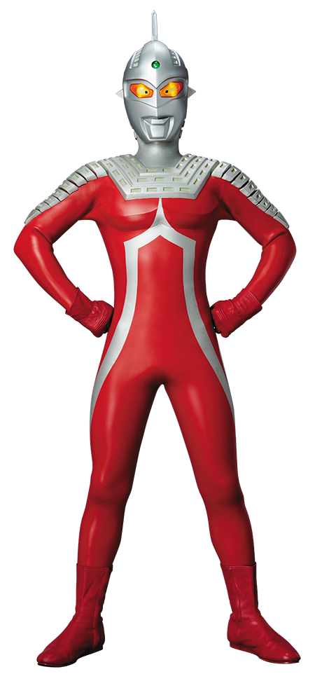
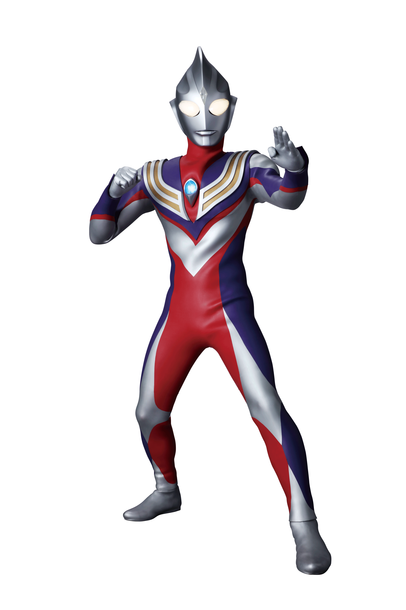
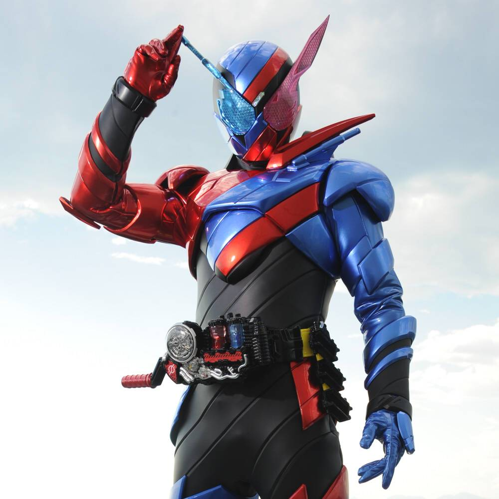
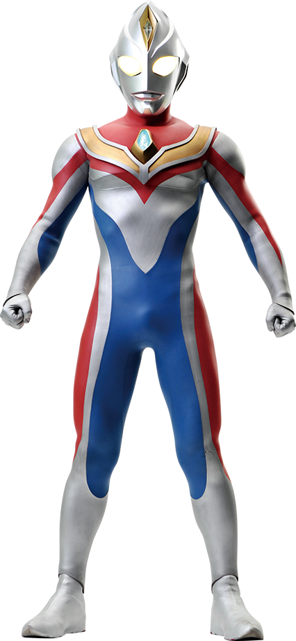
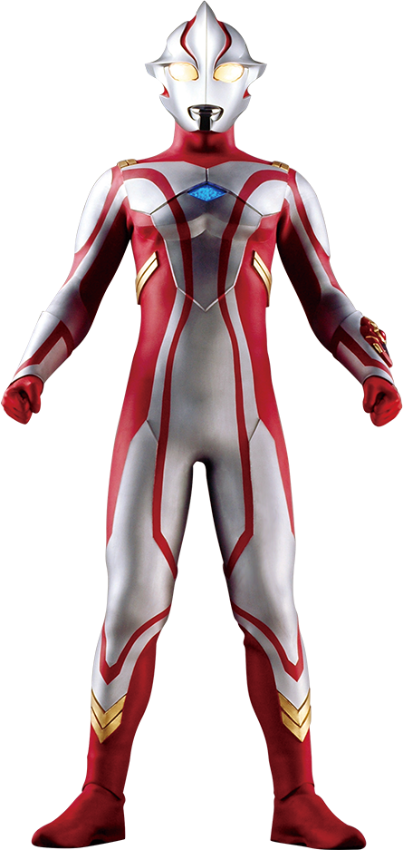

Ultra
Ultraman
1966Hayata e um visitante da Nebulosa M78 unem forças para proteger a Terra de monstros gigantes.
● DO JAPÃO PARA A SUA IMAGINAÇÃO
Entre transformações, monstros e efeitos especiais, existe um universo para descobrir. Seu próximo herói começa aqui.
Explorar as séries
Ultraman ↗
01 / EXPLORE O UNIVERSO
Clássicos e novas gerações.
Hayata e um visitante da Nebulosa M78 unem forças para proteger a Terra de monstros gigantes.

Como Dan Moroboshi, Ultraseven se junta à Ultra Guarda para enfrentar invasões alienígenas.

Daigo desperta um antigo gigante de luz e luta com a equipe GUTS para defender a humanidade.

Sento Kiryu combina os poderes das Fullbottles para enfrentar os Smash e investigar seu passado.

Shin Asuka e a Super GUTS enfrentam novas ameaças em uma era de exploração espacial.

Um jovem guerreiro Ultra chega à Terra e descobre a força do trabalho em equipe com a GUYS.
02 / GALERIA EM DESTAQUE
Use as setas para passear pelo universo tokusatsu.
03 / ALÉM DA TRANSFORMAÇÃO
A palavra japonesa significa “filmagem especial” e está associada a produções em live-action que usam efeitos especiais. É a casa de heróis mascarados, equipes coloridas e monstros gigantes.
Figurinos, miniaturas e efeitos práticos dão escala às batalhas. O trabalho dos atores dentro dos trajes dá vida aos personagens.
Ultraman, Kamen Rider e Super Sentai são exemplos de franquias. Cada uma traz seu próprio jeito de falar sobre coragem e cooperação.